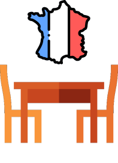

O Scrum Master é um membro do time Scrum que busca proteger o andamento do processo de desenvolvimento. Nessa função, a pessoa assume a responsabilidade de livrar os outros membros de interferências externas, impedimentos e dificuldades, ou seja, é responsável por facilitar o processo para o resto do time. Além disso, um bom Scrum Master deve ser capaz de manter seu time motivado e organizado, sendo de total responsabilidade dele promover reuniões diárias, retrospectivas e relatórios.
Para que se possa atuar nessa função é necessário não só desenvolver diversas soft skills, mas também conhecer a fundo o método Scrum. Não a toa, aqueles que atuam como Scrum Master são, na maioria, os que mais conhecem essa metodologia dentro do time.
Imagine que seu time Scrum precise montar uma mesa e entregá-la a um cliente. Após separarem as peças, vocês percebem que o único manual disponível para montar aquela mesa está em francês, língua que ninguém da equipe domina. Você, como Scrum Master, deve encontrar um jeito para que esse empecilho não atrapalhe a montagem dessa mesa, seja promovendo um treinamento ou levando aquele manual a um especialista.
